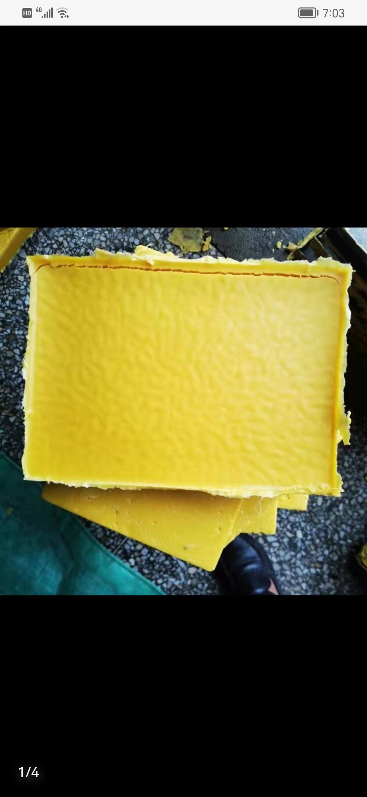
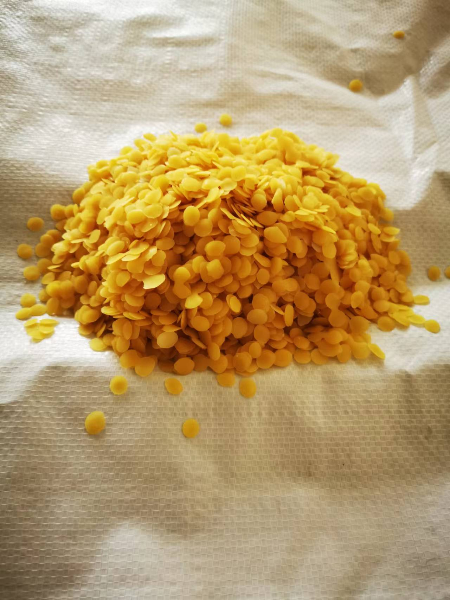

Focused Product Range
Yellow and white beeswax in the forms most commonly requested for B2B sourcing: block, slab, pellet, and flake.
Bulk Beeswax Supply from China
We supply natural yellow and white beeswax for buyers in cosmetics, candle making, polish, and industrial processing who need clear product communication, practical packaging support, and fast quotation follow-up.

Why Buyers Contact Us
Instead of decorative wording, we focus on the details buyers usually need before moving forward: product form, intended use, packaging, sample discussion, and export communication.
Yellow and white beeswax in the forms most commonly requested for B2B sourcing: block, slab, pellet, and flake.
We collect application, quantity, destination, and packing details early so the quote discussion is more efficient.
Bulk packing and custom packing direction can be discussed based on your shipment method and market needs.
We keep public claims careful and move exact specs, documents, and sample details into direct buyer communication.
About Us
Hebei Cera Rica Industrial and Trade Co., Ltd. focuses on beeswax supply for overseas buyers who need practical communication and straightforward follow-up. We support discussions around product fit, packaging direction, sample arrangements, and order planning.
Our front-end presentation is intentionally simple: enough information to help buyers decide whether to request a quote, while keeping detailed commercial confirmation inside the inquiry process.
Read More About Us
Featured Products
These are the products buyers usually ask about first when confirming use case, preferred form, and packaging direction.

Natural yellow beeswax for candles, cosmetics, polish, and general industrial applications.

Refined white beeswax for personal care, specialty processing, and projects requiring a cleaner appearance.

Convenient beeswax form for dosing, blending, formulation work, and medium- to large-volume processing.
Refined beeswax in easy-handling form for blending, production use, and specialty applications.
Applications
A practical overview helps buyers quickly judge whether they should continue to product detail or quotation.
For formulations that use beeswax as a natural wax component for structure, texture, or blend support.
Suitable for candle production and wax blending discussions based on the buyer's formulation and target market.
Applicable to wax-based surface care and polish products where beeswax is used as part of the formulation.
Project suitability can be discussed according to destination market requirements and buyer documentation needs.
Relevant projects can be reviewed according to product form, specification expectations, and commercial context.
Suitable for manufacturing, blending, and production scenarios that require practical raw wax input.
How Inquiry Usually Works
We keep the process simple so buyers know what to prepare before requesting the next step.
Tell us the product, intended use, quantity, destination country, and preferred form.
We discuss basic fit, common packing direction, and whether sample or documents are needed.
Quotation can be aligned with quantity, packing, and export-related communication.
After initial review, the conversation can continue around final requirements and arrangement details.
Buyer Decision Support
We do not over-promise on page. We focus on the commercial points that help reduce back-and-forth in the first inquiry round.
Buyers can discuss carton, bag, bulk, or other practical packing directions according to handling and destination needs.
If sample review is part of your buying process, mention it in the inquiry so we can follow up accordingly.
Applicable specification and supporting information can be discussed during inquiry based on the product and market.
Packaging can be discussed based on order size, shipment method, handling preference, and destination market needs.
If you need sample evaluation before purchase, include your project background so the request can be reviewed faster.
Commercially relevant specification and document discussion can be arranged according to actual inquiry requirements.
Yellow vs White Beeswax
This is a buyer-facing comparison, not a detailed laboratory sheet. It helps importers and product teams decide which inquiry direction is closer to their application, appearance target, and handling preference.
Form Selection
For many manufacturers, the product form matters almost as much as the color. Pellet and flake formats are often easier to handle during dosing, batching, blending, and production-line preparation.
Pellets and flakes are often easier to portion and feed into formulation or blending work than larger blocks.
Buyers commonly ask about pellet or flake form when they want more convenient production handling.
This form is often practical for candle production, personal care manufacturing, and contract processing.
If your team is deciding between block and pellet form, mention your process so quotation discussion starts from real use conditions.
Buyer FAQ
Yellow beeswax is usually chosen when buyers want a more natural-looking wax direction, while white beeswax is often chosen for a cleaner, more refined appearance.
Pellets and flakes are commonly discussed for easier dosing, blending, and production handling compared with larger block form.
The most useful starting details are product, intended use, required form, quantity, destination market, and whether samples or documents are needed.
Yes. Buyers often discuss carton, bag, bulk packing, or other shipment-friendly direction before moving forward.
Buyers usually keep beeswax dry, clean, protected from direct sunlight, and away from strong odors or contamination sources.
Yes. If sample review or product documents are part of your buying process, mention that in the inquiry so the first response can be more useful.
Company Trust Layer
Current company materials include a company profile, factory or company photos, and basic certificate files that can support early-stage buyer review.
We position ourselves as a Hebei, China-based supplier focused on natural beeswax production and export for international B2B buyers.
A trademark certificate file is available in the current project materials and can support basic buyer trust review.
An ISO-related certificate file is also available and can be referenced as part of company information review.
Company Photos
We keep the front-end simple, but selected company visuals can still help buyers feel they are dealing with a real business rather than a generic brochure page.


Quick Buyer FAQ
Yes. Our current product range covers block, slab, pellet, and flake-oriented beeswax items for inquiry.
Yes. Packaging is one of the key topics we expect buyers to discuss in the first quotation conversation.
Product name, intended use, quantity, destination country, and packaging preference are the most useful starting details.
Send your requirement and we will follow up with the next applicable commercial information.